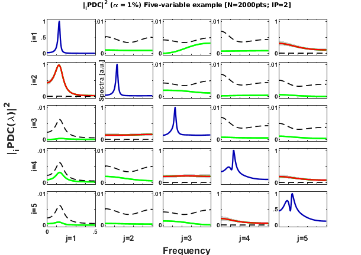
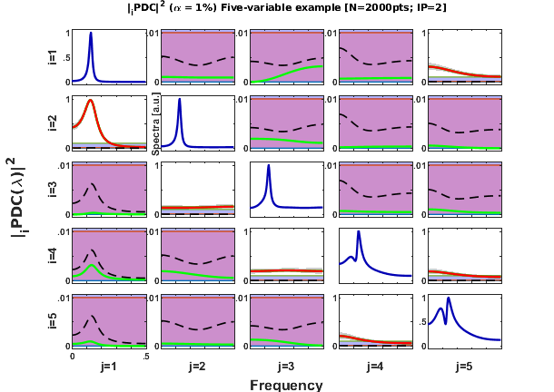
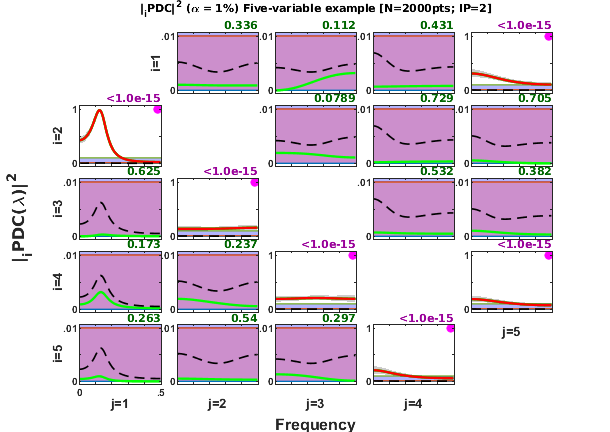
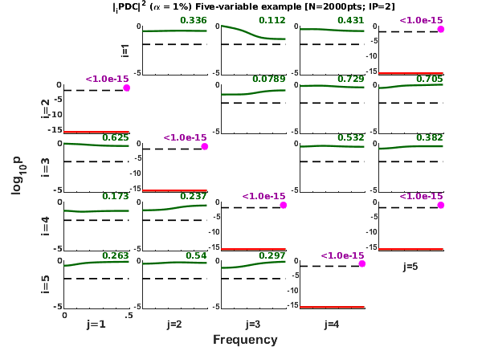
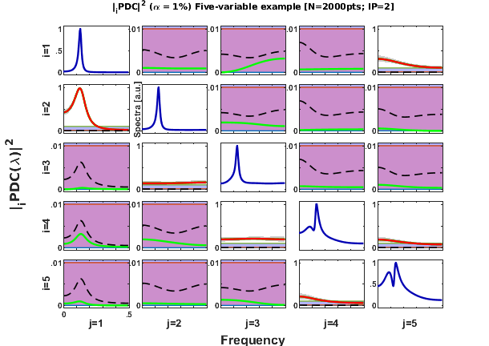
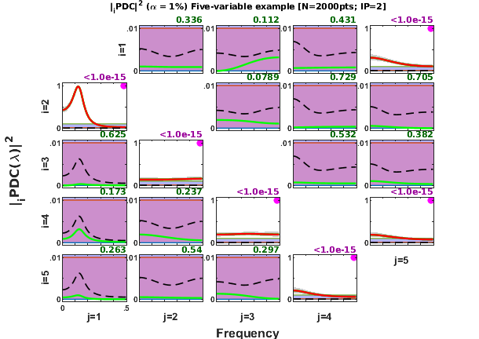
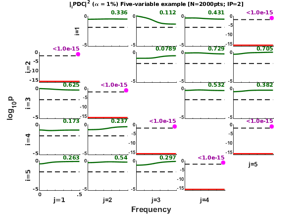

PDC or DTF analysis getting started template file
Follow and edit this template to set up analysis or your data. You might want to choose analysis parameters followed by comment containing "<***>". Check bellow.
Some important input and output parameters and variables: input: u - time series data in row-wise orientation fs - Sampling frequency (=1 for normalized frequency) maxIP - externally defined maximum IP alg - for algorithm (1: Nutall-Strand),(2: mlsm) , (3: Vieira Morf), (4: ARfit) criterion - for AR order selection => 1: AIC; 2: Hanna-Quinn; 3: Schwarz; 4: FPE, 5: fixed order in MaxIP alpha - PDC test significance level
output: c struct variable from asymp_pdc() or asymp_dtf() function required fields: c.{pdc2, dtf2} - squared original/generalized/information PDC c.th - threshold level by Patnaik approximation c.{pdc_th,dtf_th} - above threshold pdc2 or dtf2 values otherwise equal NaN c.ci1,c.ci2 - superior and inferior confidence interval c.p - VAR model order c.SS - Power spectrum c.coh2 - coherece function
Contents
asympPDC analysis functions
See also mvar, mvarresidue, asymp_pdc, asymp_dtf, gct_alg, igct_alg,
xplot, xplot_pvalues, xplot_title%===========================# % Times series for analysis / %===========================# % u - time series data in rows. % The variable u must contain the time series % In this template, if flgExample = 1 the template file will analyze a % 5-variable Gaussian independent noise processes. format compact clear all; clc
Examples
% Choose Example 1 == Five independent Gaussian random variables model % 2 == Sunspot-melanoma time series % 3 == Baccala & Sameshima (2001) 5-variable linear model % 4 == Takahashi(2008) Thesis' example model flgExample = 3; disp('======================================================================'); disp('============= PDC analysis getting started template ==================') disp('======================================================================'); switch flgExample case 1 u=randn(2000,5); %<***> Example (1) disp(' Random Independent Process with 5 variables') disp('======================================================================'); case 2 u=sunmeladat([4 3]); %<***> Example (2) disp(' Andrews and Herzberg''s Sunspot and Melanoma Example'); disp(' Sunspot --> Melanoma or other way?'); disp('======================================================================'); case 3 u=baccala2001a_ex5data(2000); case 4 u=takahashi_thesis_dat(200); otherwise error('Wrong example selection.') end fs = 1; %<***> Sampling frequency
======================================================================
============= PDC analysis getting started template ==================
======================================================================
======================================================================
Linear VAR(2) Model Example 5 - closed-loop
Baccala & Sameshima. Biol. Cybern. 84:463-474, 2001.
x1==>x2 x2-->x3 x3-->x4 x4-->x5 x5-->x4 x5-->x1
======================================================================
Checking structure of input time series u
[nChannels,nSegLength] =size(u); if nChannels > nSegLength disp('The data might be transposed.'); u = u.'; [nChannels,nSegLength]=size(u); end %===========================# % Channel identification / %===========================# switch flgExample case 1 chLabels = {'x_1';'x_2';'x_3';'x_4';'x_5'}; %<***> Example (1) strTitle2 = 'Five independent Gaussian noises '; %Title info case 2 chLabels = {'Sunspot';'Melanoma'}; %<***> Example (2) strTitle2 = 'Sunspot-Melanoma 1936-1972 '; case 3 chLabels = []; %<***> Example (3) strTitle2 = 'Five-variable example '; case 4 chLabels = {'X'; 'Y'; 'Z'}; % Takahashi's thesis example strTitle2 = 'Takahashi 2008 (Thesis) example'; end flgLabels = ~isempty(chLabels); if flgLabels if nChannels ~= max(size(chLabels)) error('Numbers of labels and channels do not match.') end end
The data might be transposed.
Selecting Data Pre-processing Action flags
flgDetrend = 1; %<***> Usually it's recommended to detrend the time series. flgStandardize = 0; %<***> For gPDC and iPDC estimates normalization has no effect. if flgStandardize disp('Be aware that the data standardization does not affect the generalized') disp(' and information PDC/DTF estimates nor its statistical results, ') disp(' so that data standardization is not necessary in these measures.') end
Set up Multivariate AutoRegressive (MAR) estimation algorithm parameters
Choose one of algorithm for MAR model estimation alg - for algorithm (1: Nutall-Strand),(2: mlsm minimum least-square method), (3: Vieira Morf), (4: QR artfit)
alg = 1; %<***> Nuttall-Strand (alg=1) algorithm, our experience indicate that % N-S seems to be a good and robust estimation algorithm.
MAR model order selection criteria
criterion - for AR order choice 1: AIC; 2: Hanna-Quinn; 3: Schwarz or BIC; 4: FPE, 5: fixed MAR order given by MaxIP bellow
criterion = 1; %<***> AIC, Akaike information criterion (Our preferred one % along with BIC) maxIP = 30; % maxIP - externally defined maximum IP %<***>
Adequacy of MAR model estimate
VARadequacy_signif = 0.05; % VAR model adequacy significance level
PDC or DTF Analysis parameters
Selecting number of frequency points
nFreqs = 128; %<***> number of points on frequency scale; % recommended to use either 64 or 128.
Selection of metric used in PDC or DTF estimate
metric = 'info'; % metric 'euc' - Euclidean -> original PDC or DTF; % 'diag' - diagonal -> gPDC or DC; % 'info' - information -> iPDC or DTF;
Significance level for PDC2 null hypothesis testing, GCT and iGCT
alpha = 0.01; %<***> Significance level for PDC2 null hypothesis testing, % % Note: if alpha == 0, no asymptotic statistics % calculation is performed and ASYMP_PDC (see bellow) % will only returns PDC. This option is interesting % if you want faster PDC calculation. gct_signif = alpha; % Granger causality test significance. Choose other % value if you have good reason for adopting different % one from frequency domain statistical testing. igct_signif = alpha; % Instantaneous Granger causality test significance level.
Pretty-plot option parameters for xplot and xplot_pvalues function
flgScale = 2; % 1: [0 1] / {if max(PDC2/DTF2) > 1}:[0 max(PDC2/DTF2)] % 2: [0 {if max(PDC/DTF2) > 1}:max(PDC/DTF2)]/[0 1]/[0 .1]/[0 .01] % based on flgMax (PDC2/DTF2/Thr/CI/all) % 3: [0 max(PDC2/DTF2/Thr/CI/all)] % based on flgMax (PDC2/DTF2/Thr/CI/all) % 4: [0 {max(PDC2/DTF2/Thr/CI/all) or round to {0.01 0.1 1.0}] flgMax = 'all'; % {'PDC'|'DTF'|'Thr'|'CI'|'TCI'|'all'} measure used as upper limit % for y-axis scales: % PDC|DTF - PDC2/DTF2 maximum value; % Thr - Patnaik threshold maximum value; % CI - maximum upper confidence interval value; % TCI - threshold or CI max value; % all - plotted either max([PDC2/DTF2, Thr, CI]) value; % See also flgScale. flgSignifColor = 3; % 0: black line % 1: black / gray -> significant /not signif PDC/DTF % 2: red / gray -> " % 3: red / green -> " % 4: red / black -> " % 5: black / green flgColor = [0 1]; % Plotting option for automatic scaling for small PDC % values. % if flgColor = 0, y-axis scale = [0 1] % elseif flgColor = 1, the pdc_xplot routine rescales % the y-axis automatically according to the following % rules: % if .01<=PDC(f) < .1 background-color = light-blue, % so that y-axis scale = [0 .1] % elseif PDC(f) < .01 background-color = light-purple % and y-axis = [0 .01]; % for flgColor=[0 1], both lay-outs are plotted. % 1 2 3 4 5 6 7 flgPrinting = [1 1 1 2 2 0 1]; % Example: Plot everything, except coh2. % blue | | | | | | 7-- {0:5} Spectra (0: w/o; 1: Linear; 2: Log; % | | | | | | 3: PDC2; 4: Linear normalized; % | | | | | | 5: Log spectra + PDC2) % gray | | | | | 6-- {0:1} Coh2 (0: w/o Coh2; 1: w Coh2) % dark-purple | | | | 5-- {0:3} Print GCT p-values and dot-mark significant % or dark-green | | | | connectivity channel-pair (0: w/o; % | | | | 1: p-values; 2: dot-mark +GCT; % | | | | 3: p-values + dot-mark significant GCT) % dashed-blue | | | 4-- {0:4} Confidence interval (0:w/o; 1: Dashed-lines; % | | | 2: Shaded-plot; 3: Error-bar 1; 4: Error-bar 2 % red | | 3-- {0:1} Significant PDC2|DTF2 in red lines % dashed-black | 2-- {0:1} Patnaik threshold level in black dashed-lines % green 1-- {0:1} PDC2/DTF2 in green lines or black w/o statistics, % see flgSignifColor bellow for line color selection. w = fs*(0:(nFreqs-1))/2/nFreqs; % frequency scale % maximum frequency to plot in frequency domain measures w_max = fs/2; %<***> Usually half of sampling frequency, the Nyquist frequency %========================================================================== %========================================================================== % WARNING: BELOW THIS LINE PROBABLY YOU MIGHT NOT WANT TO EDIT, % UNLESS YOU NEED TO CUSTOMIZE YOUR ANALYSIS ROUTINE. %========================================================================== %========================================================================== % Detrend and standardization options %========================================================================== % Determine time series length and check if data is row-wise organized. [nChannels,nSegLength]=size(u); if nChannels > nSegLength, u=u.'; [nChannels,nSegLength]=size(u); % Transpose if not. end if flgDetrend for i=1:nChannels, u(i,:)=detrend(u(i,:)); end disp('Time series were detrended.'); end if flgStandardize for i=1:nChannels, u(i,:)=u(i,:)/std(u(i,:)); end disp('Time series were scale-standardized.'); end %========================================================================== % Additional info for title (optional) strTitle1 = []; %================== switch alg case 1 disp('VAR estimation using Nutall-Strand algorithm.') case 2 disp('VAR estimation using least-squares estimator.') case 3 disp('VAR estimation using Vieira-Morf algorithm.') case 4 disp('VAR estimation using QR-Arfit algorithm.') end %================================# % MAR order selection criteria / %================================# switch criterion case 1 disp('Model order selection criteria: AIC.') case 2 disp('Model order selection criteria: Hanna-Quinn.') case 3 disp('Model order selection criteria: Schwarz (BIC).') case 4 disp('Model order selection criteria: FPE.') case 5 disp('Model order selection criteria: fixed order in maxIP.') otherwise error('Model order selection criteria: NOT IMPLEMENTED YET.') end %========================================================================== % VAR model estimation %========================================================================== [IP,pf,A,pb,B,ef,eb,vaic,Vaicv] = mvar(u,maxIP,alg,criterion); disp(['Number of channels = ' int2str(nChannels) ' with ' ... int2str(nSegLength) ' data points; MAR model order = ' int2str(IP) '.']); %========================================================================== % Testing for adequacy of MAR model fitting through Portmanteau test %========================================================================== h = 20; % testing lag aValueVAR = 1 - VARadequacy_signif; flgPrintResults = 1; [Pass,Portmanteau,st,ths] = mvarresidue(ef,nSegLength,IP,aValueVAR,h,... flgPrintResults); %========================================================================== % Granger causality test (GCT) %========================================================================== flgPrintResults = 1; [Tr_gct, pValue_gct] = gct_alg(u,A,pf,gct_signif,flgPrintResults); %========================================================================== % Instantaneous Granger causality test (iGCT) %========================================================================== flgPrintResults = 1; [Tr_igct, pValue_igct] = igct_alg(u,A,pf,gct_signif,flgPrintResults); %========================================================================== % PDC, threshold and confidence interval calculation. %========================================================================== % if alpha == 0, no asymptotic statistics is performed. ASYMP_PDC returns % only the PDC. This option is much faster!! c = asymp_pdc(u,A,pf,nFreqs,metric,alpha); % If you want to print the Granger Causality Test p-values you need to % assign these values to c struct variable c.Tragct = Tr_gct; c.pvaluesgct = pValue_gct; % or % c=asymp_dtf(u,A,pf,nFreqs,metric,alpha); % for DTF analysis
Time series were detrended.
VAR estimation using Nutall-Strand algorithm.
Model order selection criteria: AIC.
maxOrder limited to 30
IP=1 vaic=78725.409631
IP=2 vaic=75978.042250
IP=3 vaic=75997.884324
Number of channels = 5 with 2000 data points; MAR model order = 2.
====================================================================================================
MVAR RESIDURES TEST FOR WHITENESS
----------------------------------------------------------------------------------------------------
Good MAR model fitting! Residues white noise hypothesis NOT rejected.
Pass = 0.038
st = 437.506
====================================================================================================
GRANGER CAUSALITY TEST
----------------------------------------------------------------------------------------------------
Connectivity matrix:
NaN 0 0 0 1
1 NaN 0 0 0
0 1 NaN 0 0
0 0 1 NaN 1
0 0 0 1 NaN
Granger causality test p-values:
NaN 0.9872 0.2843 0.9463 0
0 NaN 0.7038 0.8642 0.1038
0.3861 0 NaN 0.2397 0.0897
0.0118 0.0547 0 NaN 0
0.7792 0.5140 0.1410 0 NaN
====================================================================================================
INSTANTANEOUS GRANGER CAUSALITY TEST
----------------------------------------------------------------------------------------------------
Instantaneous connectivity matrix:
NaN 0 0 0 0
0 NaN 0 0 0
0 0 NaN 0 0
0 0 0 NaN 0
0 0 0 0 NaN
Instantaneous Granger Causality test p-values:
NaN 0.8649 0.7968 0.4173 0.1674
0.8649 NaN 0.2890 0.1162 0.2779
0.7968 0.2890 NaN 0.2748 0.7064
0.4173 0.1162 0.2748 NaN 0.2408
0.1674 0.2779 0.7064 0.2408 NaN
>>>> Instantaneous Granger Causality NOT detected.
====================================================================================================
Adding further analysis details to the figure title.
% strTitle3 = ['[N=' int2str(nSegLength) 'pts; IP=' int2str(c.p) '; ' ... % datestr(now) ']']; strTitle3 = ['[N=' int2str(nSegLength) 'pts; IP=' int2str(c.p) ']']; % or leave it empty: strTitle3=[]; %========================================================================== % Matrix Layout Plotting of the Analysis Results %========================================================================== w_max = fs/2; strTitle = [strTitle1 strTitle2 strTitle3]; strWindowName = 'PDC/DTF/GCT Analysis Template Example'; % The following "for loop" through flgColor values, 0 and 1, and yields a % pair of plots, one without and other with color scale rearrangement option. % Value range of PDC and Coherence is from [0 1], but sometimes the maximum % peak value is small (<0.1), or even smaller, (<.01), so in these cases it % might be interesting to have a plot with finer smaller y-axis scale. The % white-background plot indicates full-scale [0 1] y-axis, while % light-blue-background stands for intermediate [0 .1] scaling and % light-purple-background shows very fine detail of small, usually not % significant PDCs. Try flgColor = 0 or 1, or both [0 1]. flgColor = [0 1]; for kflgColor = flgColor if kflgColor strWindowName = 'xplot FUNCTION **WITH** background scale color.'; else strWindowName = 'xplot FUNCTION **WITHOUT** background scale color.'; end flgPrinting = [1 1 1 2 0 0 1]; % blue | | | | | | 7-- {1} Spectra 1: Linear scale % gray | | | | | 6-- {0} Without Coh2 % dark-purple | | | | 5-- {0} GCT 0: without % dashed-blue | | | 4-- {2} Confidence interval 2: Shaded-plot % red | | 3-- {1} Significant PDC2|DTF2 in red lines % dashed-black | 2-- {1} Patnaik threshold level in black dashed-lines % green 1-- {1} PDC2 in green lines or black w/o statistics, [h2,~,~] = xplot(strWindowName,c,flgPrinting,fs,w_max,chLabels, ... kflgColor,flgScale,flgMax,flgSignifColor); xplot_title(alpha,metric,'pdc',strTitle); pause(3) flgPrinting = [1 1 1 2 3 0 0]; % blue | | | | | | 7-- {0} No plotting on main diagonal % gray | | | | | 6-- {0} Without Coh2 % dark-purple | | | | 5-- {3} Print GCT 3: p-values + dot-mark significant GCT % dashed-blue | | | 4-- {4} Confidence interval 2: Shaded-plot % red | | 3-- {1} Significant PDC2|DTF2 in red lines % dashed-black | 2-- {1} Patnaik threshold level in black dashed-lines % green 1-- {1} PDC2 in green lines or black w/o statistics, [h2,~,~] = xplot(strWindowName,c,flgPrinting,fs,w_max,chLabels, ... kflgColor,flgScale,flgMax,flgSignifColor); xplot_title(alpha,metric,'pdc',strTitle); pause(3) % Pause to allow figure visualization during analysis end %========================================================================== % Matrix Layout Plotting of PDC p-values %========================================================================== % See xplot_p-values() function for more details % % flgPrinting: [1 1 1 2 3 0 0]; % blue | | | | | | 7-- {0:2} Spectra (0: wo; 1: Linear; 2: Log) % | | | | | 6-- {} Not used % dark-purple | | | | 5-- {0:3} Mark significant GCT pairs + print p-values % or dark-green | | | | (0: w/o; 1: print p-values; 2: mark +GCT; % | | | | 3: print p-values + mark significant GCT) % dashed-blue | | | 4-- {0:2} Scale of p-values plots 1:linear; 2:log10 % | | 3-- {} Not used % dashed-black | 2-- {0:1} Patnaik threshold level in black dashed-line % 1-- {} Not used flgPrinting = [1 1 1 2 3 0 0]; flgScale = 2; % y-axis scale for p-values: 1: linear [0 1] and log [0 -15]; % 2: log y-axis according to % max(abs(pvalues_log10)) value % [0 -5], [0 -10] or [0 -15] strWindow = ['xplot_p-values FUNCTION to plot PDC p-values in frequency domain']; [h3,~,~] = xplot_pvalues(strWindow,c,flgPrinting,fs,w_max,chLabels, ... flgColor,flgScale); xplot_title(alpha,metric,strTitle) %======================= xplot ======================================== %Plot legend: Blue lines on the main diagonal = Power spectra; % Black dashed lines are Patnaik threshold for dtfn; % Green lines = non significant dtfn; % Red lines = significant dtfn; % Light-gray lines = coherence function. % % Notes: a.The main diagonal of matrix layout contains power spectra. % b.Coherences are symmetric, e.g., % Coh_{Sunspot,Melanoma}(f) = Coh_{Melanoma,Sunspot}(f). % c.dtfn is asymmetric relation, and the dtfn graphics should % be read as if the flow of information is been from the % x-axis variable toward y-axis variable. % % For sunspot and melanoma example, one only sees significant % dtfn from Sunspot to Melanoma, which could eventually be % interpreted that "Sunspot", or the Sun's activity % modulates the incidence of melanoma. %======================= dtf_xplot ======================================== disp('======================================================================'); disp('============ ANALYSIS_TEMPLATE SUCCESSFULLY FINISHED =================') disp('======================================================================');
====================================================================== ============ ANALYSIS_TEMPLATE SUCCESSFULLY FINISHED ================= ======================================================================
   
  